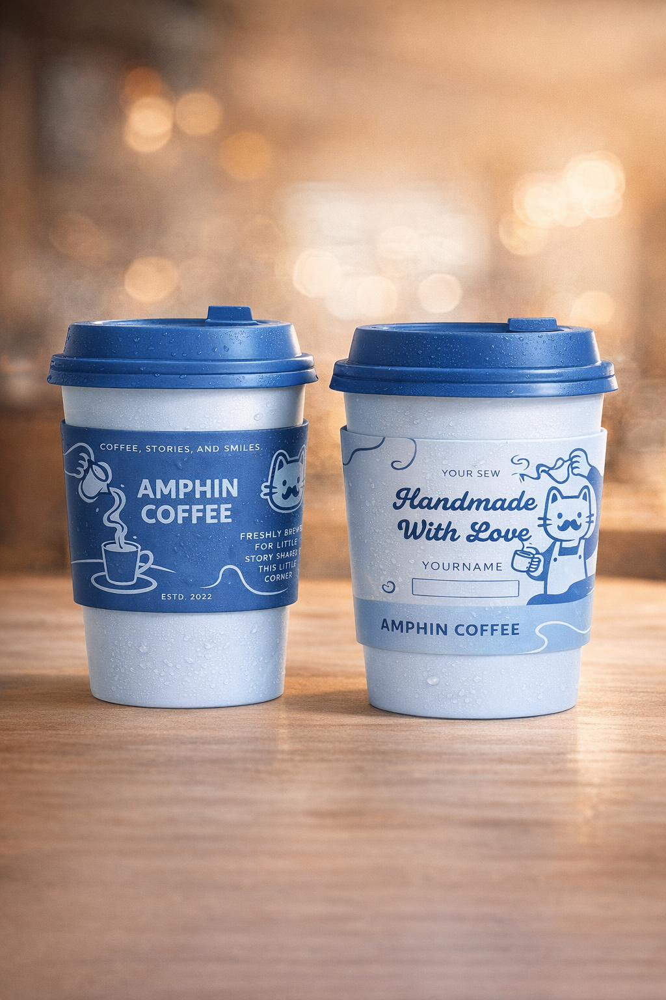
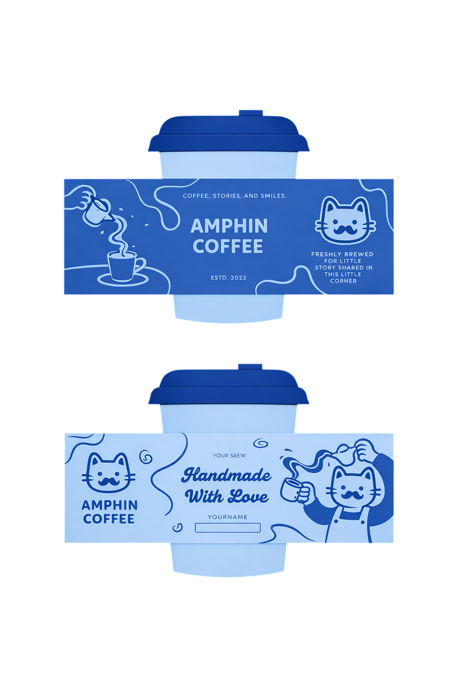
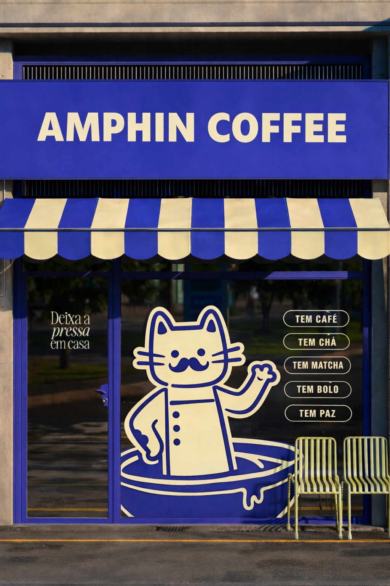

Find the personality
Build an inviting identity around a playful cat mascot.
A playful coffee identity inspired by Vietnamese phin culture, designed to feel familiar, warm, and instantly recognizable.

Am Phin Coffee / Selected work, 2026
Am Phin Coffee is a visual identity concept inspired by Vietnamese phin coffee culture, built to feel approachable, distinctive, and warm.
Many coffee shops use similar visual cues. The challenge was to create a memorable identity that nods to Vietnamese coffee culture without making it feel predictable.
Build an inviting identity around a playful cat mascot.
Pair a blue-and-cream palette with tactile illustration.
Carry the identity across cups, sleeves, loyalty cards, and storefront touchpoints.



This concept reinforced how a consistent visual personality can translate across physical and digital brand touchpoints. The work is a design exploration; commercial results have not been measured.